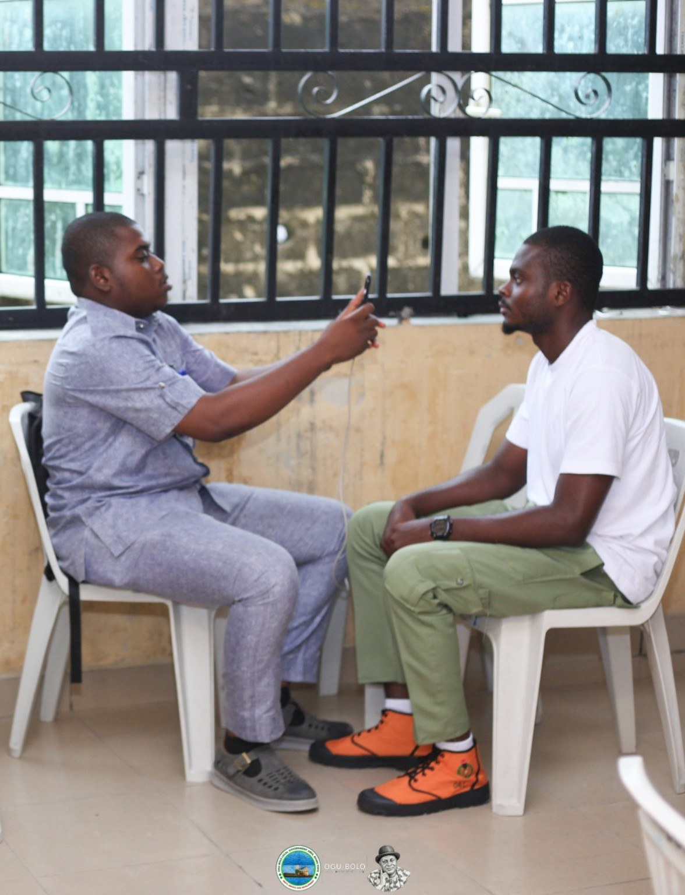

Health & NYSC
Ogu/Bolo Council Begins Capturing Corps Members for Free Healthcare Scheme
The Ogu/Bolo Local Government Council has commenced the registration and capturing of National Youth Service Corps (NYSC) members serving in the LGA into its free healthcare scheme, fulfilling a promise made by the Executive Chairman, Chief Vincent Nemieboka Esq.
The initiative aims to help corps members posted to Ogu/Bolo access free healthcare during their service year. The supplied announcement also says the initiative was announced alongside a ₦30,000 monthly stipend for corps members serving in the LGA.